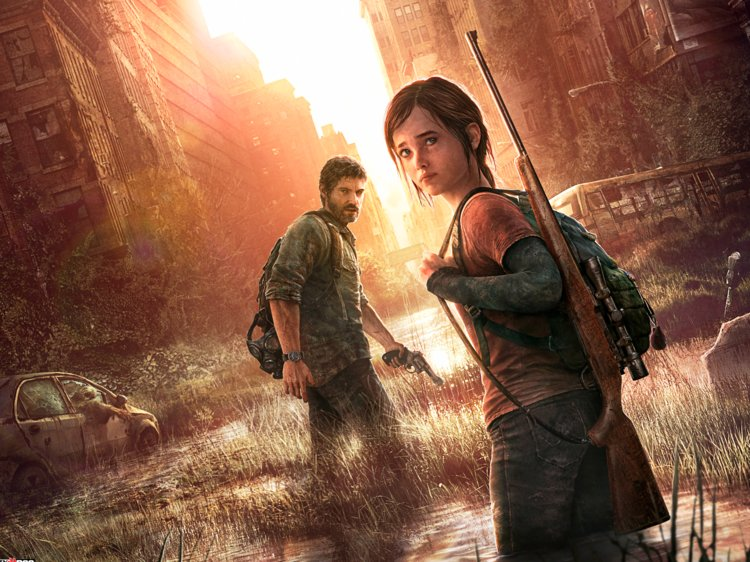

I will be going into 11th grade this year, in Somerville High School. I live with my mom and dad. I was born in Guyana, South America and I came to NJ when I was 7 years old. I am now 15 years old. My birthday is September 4th, which makes me a Virgo.
I like YA novels, mostly fantasy and contemporary. I also like to play video games. So far, I have played The Last Of Us, Rise Of The Tomb Raider, and Life Is Strange. Two years ago, I took sewing classes at RVCC. I like to travel and I also like photography. My dislikes include insects and antique dolls. My favorite apps to use are Youtube and Instagram.
Favorite Mystery/Romance Book: Caraval Favorite Historical Fiction Book: Pachinko Favorite Fantasy Book: GirlsOfPaperAndFire 